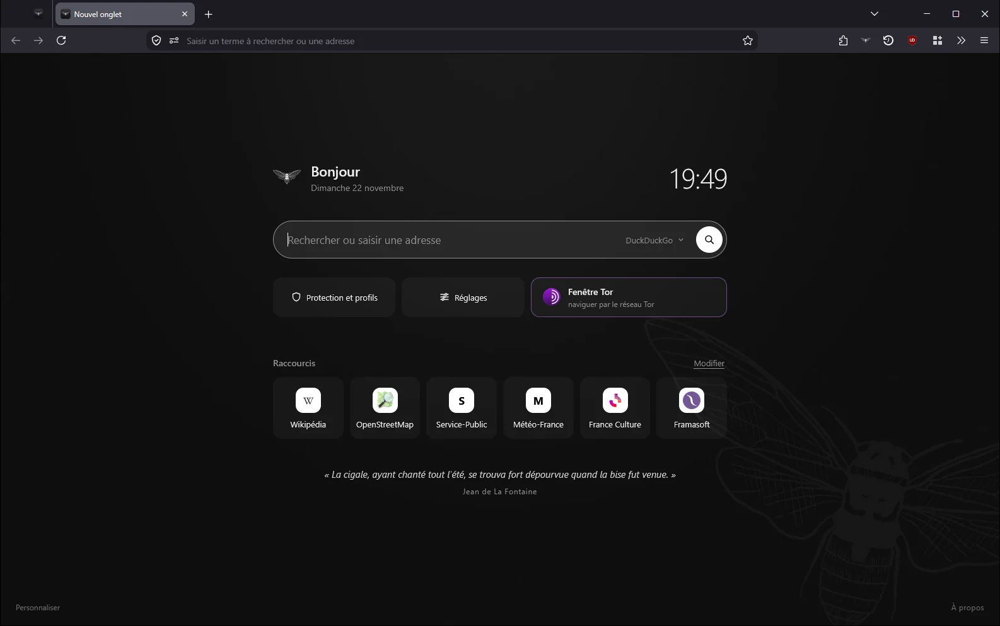
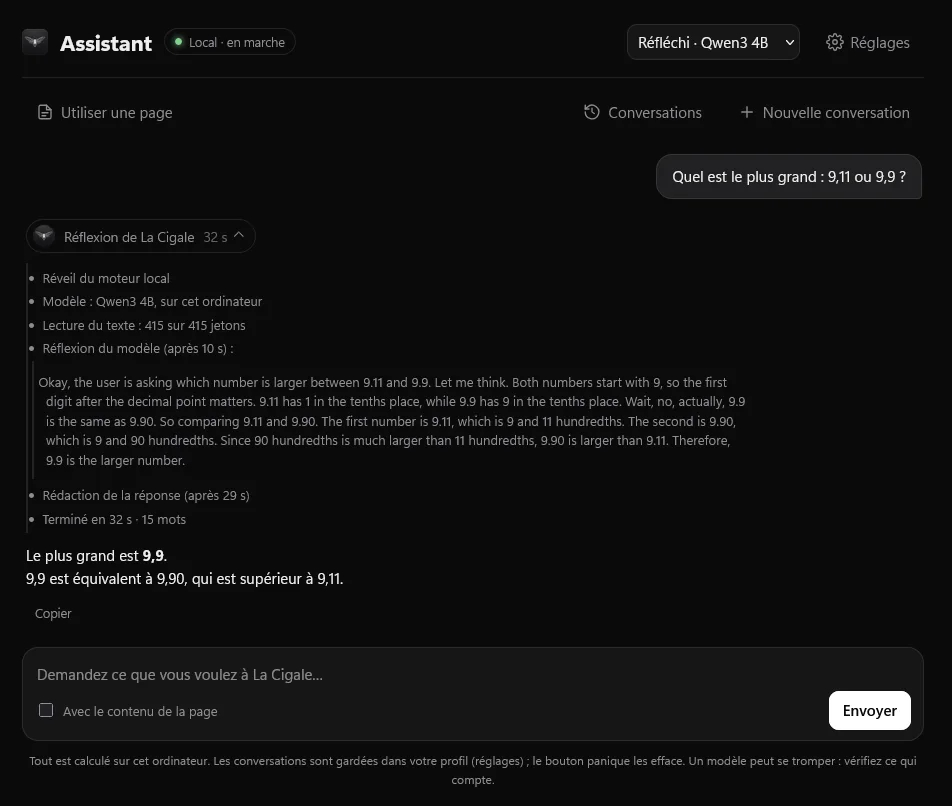
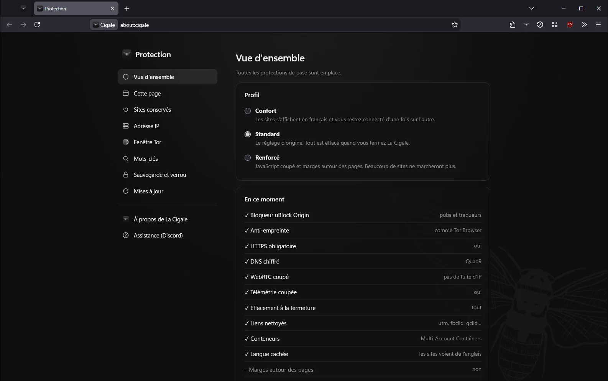

New: La Cigale 1.8.3
La Cigale
The browser that keeps your data quiet.
No phone version: La Cigale installs on a Windows or Linux computer.

Firefox ESR tuned for privacy, free and open source. Nothing is sent to anyone, and everything is wiped when you close it.
Protected from the first launch.
What it does without being asked.
No telemetry
No reports, no studies, no ads in new tabs.
uBlock Origin built in
Trackers, ads and cookie banners blocked from the first launch.
Fingerprinting protection
Tor Browser's settings: your screen, fonts and time zone no longer give you away.
Encrypted DNS
Your DNS lookups go to Quad9, encrypted, instead of your internet provider.
Your IP address hidden
With the Tor window, or your own proxy list, rotated, with a kill switch.
Nothing stays
Cookies, history and cache wiped on close, except for the sites you keep.
New in 1.7
An AI that stays with you.
La Cigale's assistant runs entirely on your computer. No account, no server: your questions go nowhere.
- Summarize, explain, analyzeRight-click a page: “Ask La Cigale”.
- Translate in placeThe page is translated on your computer, top first, links kept.
- Think before answeringThe Thinker model shows its reasoning step by step.
- Beside the pageIn a side panel that follows the tab you are on.

The engine and the model download once, when you ask (2.5 to 5 GB). 64-bit Windows and Linux.
What no other browser brings together.
Everything runs on your computer. None of these shields sends anything to any service.

New identity
One click: everything wiped, tabs closed, proxy changed. Sites can no longer link you to before.
One proxy per site
Each site sees its own IP address, always the same. Two sites can no longer cross-check you.
Lookalike detector
paypa1.com, Cyrillic letters, amazon-refund.com: a warning before you type anything.
Form shield
Your password never leaves unencrypted, or towards another site, without your say.
Verified downloads
The SHA-256 checksum published on the page is compared to the file you got, automatically.
Unknown-site mode
JavaScript off on sites you have not trusted yet.
Link via Tor
Right-click a link: it opens in the Tor window, carrying nothing along.
Ephemeral tabs
They close themselves when you forget them, and the site is wiped with them.
Work, Personal, Bank profiles
Three separate worlds, each with its colour and cookies.
Seyra panel
Your encrypted messenger beside the page, always open.
Page report
Trackers, fingerprinting attempts, third parties, certificate age: one click on the cicada.
Clean shared links
Copying a link strips trackers and shortens Amazon links.
Download La Cigale.
Free and open source, for Windows, macOS and Linux.
“No one shall be subjected to arbitrary interference with his privacy, family, home or correspondence.”